Mini Trailer Shelter
- Winner · Judges’ Prize for Best Designed 2D & 3D Model, Autodesk Instructables “Make It Small”
- Autodesk Inventor
- AutoCAD
- Revit
- Laser cutting
- 3D printing
I wanted to design a small, portable shelter that could provide some basic necessities for someone experiencing homelessness: somewhere to sleep, cook, store belongings, and get water and electricity, all compact enough to be towed by a car.
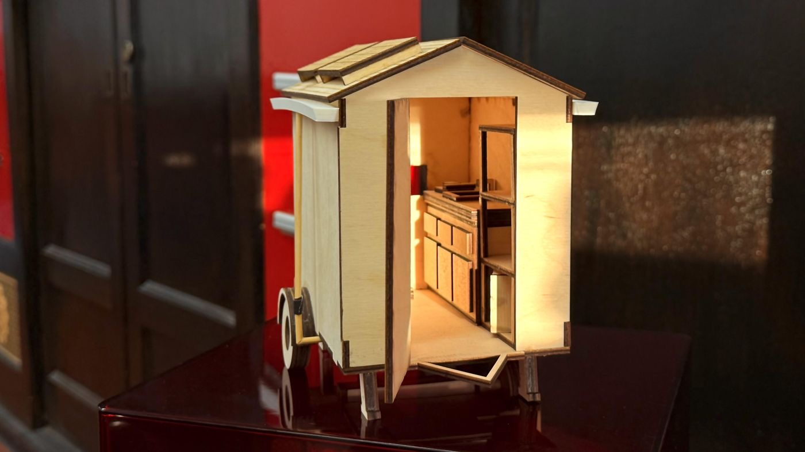
Part RV, part tiny home
I see people experiencing homelessness everywhere in New York City, and I wanted to engineer something that could ease even a few of the burdens they face. I came up with a trailer shelter that combines features of an RV and a tiny home, with a proposed 6 × 8 ft floor plan.
The design includes a foldable bed, a compact kitchen, storage compartments, rainwater collection, solar panels, and a water tank. It was a conceptual design that I brought to life as a physical scale model, rather than a full-size, functioning shelter.
Two failed attempts, then a plan
I initially jumped straight into Autodesk Inventor, but after two unsuccessful attempts, I realized I hadn’t planned the layout carefully enough. So I started over, this time drawing floor plans and different views in AutoCAD before modeling anything in 3D.
Working with such a small floor area meant that nearly every design choice involved a trade-off. Going back to 2D drawings made the rest of the process much smoother and helped me catch problems before they became difficult to fix.
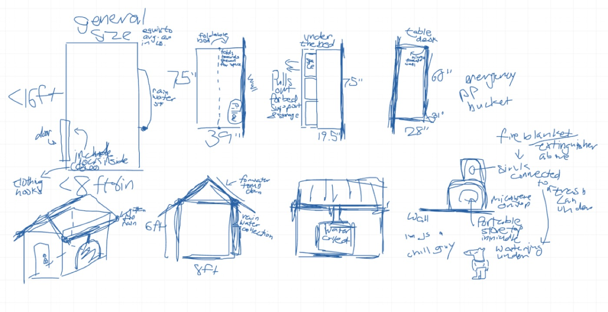
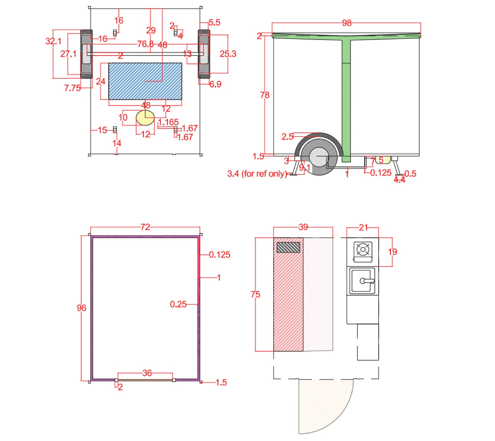
What’s a concept, and what’s real
The full-size systems below are proposals from my design. The scale model shows the structure, layout, and moving parts, not working utilities.
Proposed full-scale design
- Rainwater collection with filtering, pumped to the sink
- 35-gallon water tank under the floor, plus a greywater container
- Solar panels with battery storage
- Foam-insulated double walls, steel or aluminum exterior
- Compact kitchen with a portable stove, and a propane compartment
- Wheels, axle, hitch, and stabilizers for towing
Built in the scale model
- Laser-cut wooden walls, floor, and roof
- Hinged door and a mattress that folds into a couch
- Kitchen counters, drawers, and shelves
- 3D-printed gutters with dowel pipes
- A removable roof section to see and reach inside
The scale model
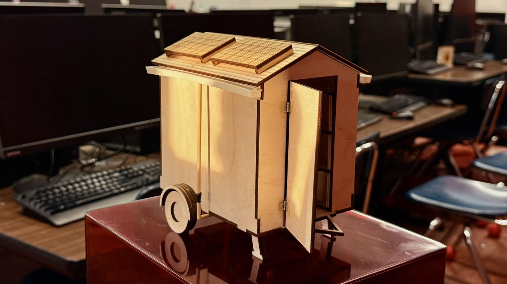
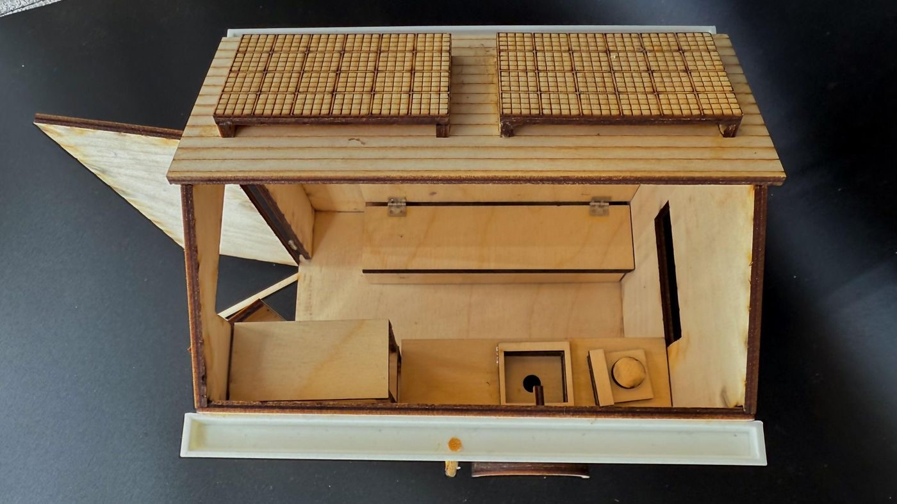
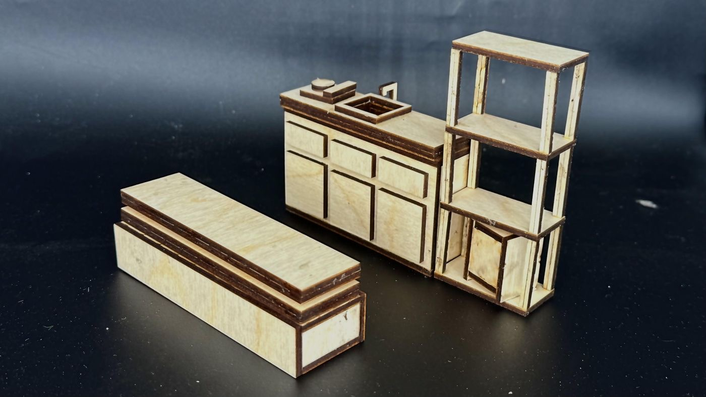
How it came together
Design trade-offsThe water tank, the folding bed, and towing limits
For the shelter to be towable, it had to fit trailer regulations without needing a special permit. In my research, the typical maximum trailer size in the U.S. was 16 × 8 × 13.5 ft (L × W × H), and a standard car can tow about 5,000 lbs. My design fits within those limits.
I originally wanted to put the water tank on the side of the trailer. But I realized that a full tank would shift the center of mass and could make the trailer unstable. I moved it underneath the floor instead, adjusting the planned capacity from 50 to 35 gallons to fit the space between the other parts underneath and the height of the tires.
I also designed a mattress that could fold into a couch, so the same area could serve different purposes throughout the day.
CAD modeling and assemblyRevit for the structure, Inventor for the details
After completing the 2D plans, I used Revit to model the basic structure (with some help from a friend, since it was my first time using it) and imported it into Autodesk Inventor to add the details.
I modeled components including the wheels and axle, trailer hitch, stabilizers, kitchen counters, drawers, water tank compartment, gutters, solar panels, and foldable furniture. For dimensions, I measured objects I had at home or looked up product dimensions online.
Each component was modeled separately before being brought into the final assembly. I used assembly constraints and joints to position parts and explore how movable features, such as the bed and wheels, would fit together.
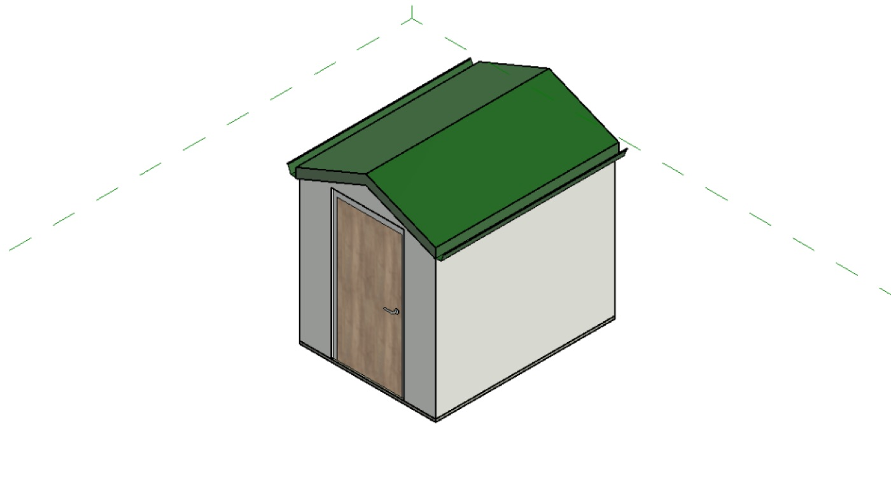
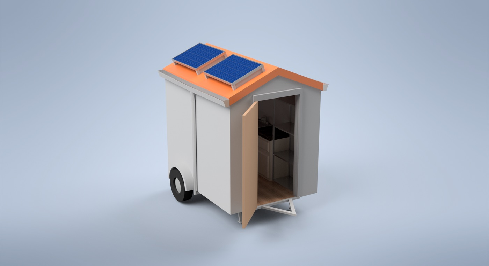
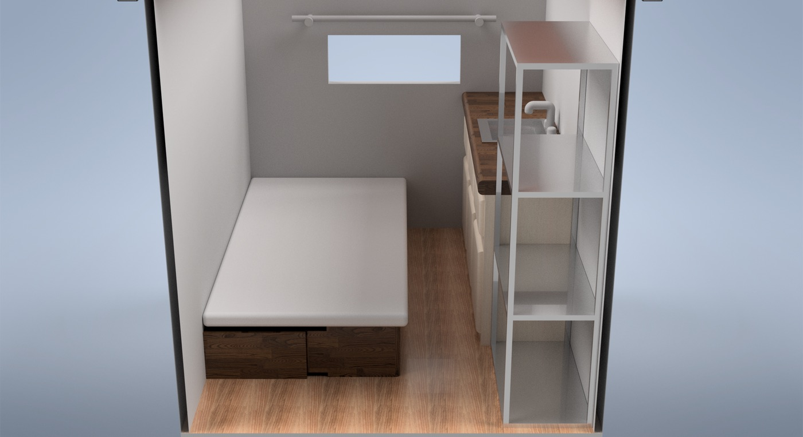
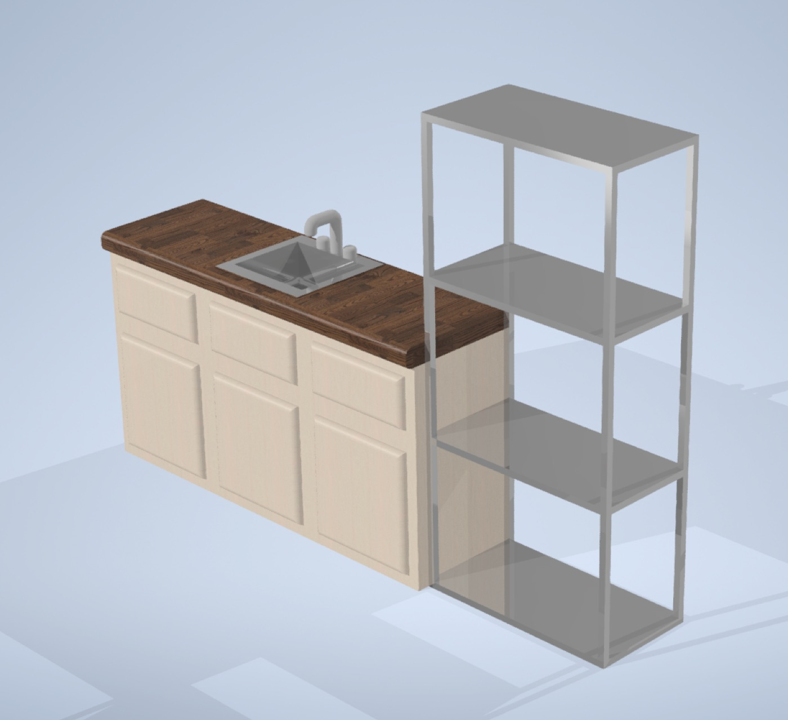
Building the scale modelLaser cutting, 3D printing, and assembly
I initially planned to 3D print the structure, but my CAD teacher suggested laser cutting instead. Since I hadn’t worked with a laser cutter before, this became another part of the learning process.
I prepared AutoCAD drawings for the wooden panels (on 11.5 × 11.5 × 0.125 in boards), laying every part out flat so it could be cut and glued back together into 3D. Laser cutting the gutters didn’t work, so we 3D printed them instead and used dowels for the pipes.
With my teacher’s guidance, I assembled movable features such as the hinged door and folding mattress. One of my favorite details is the removable section of the roof, which makes it possible to see and access the interior.
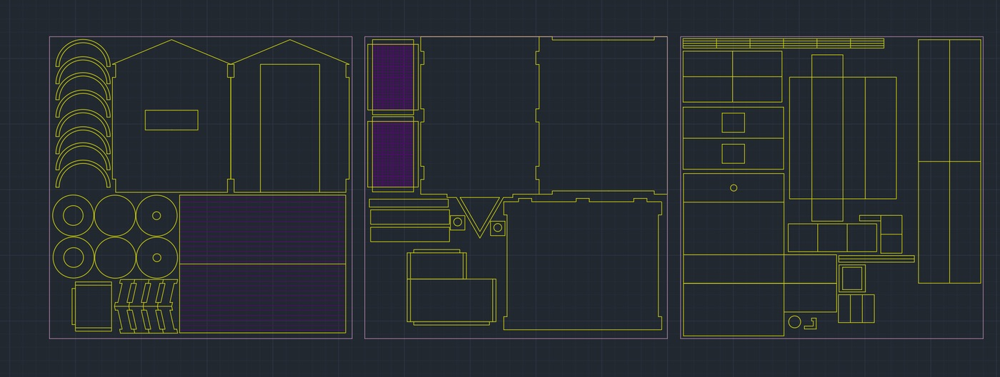
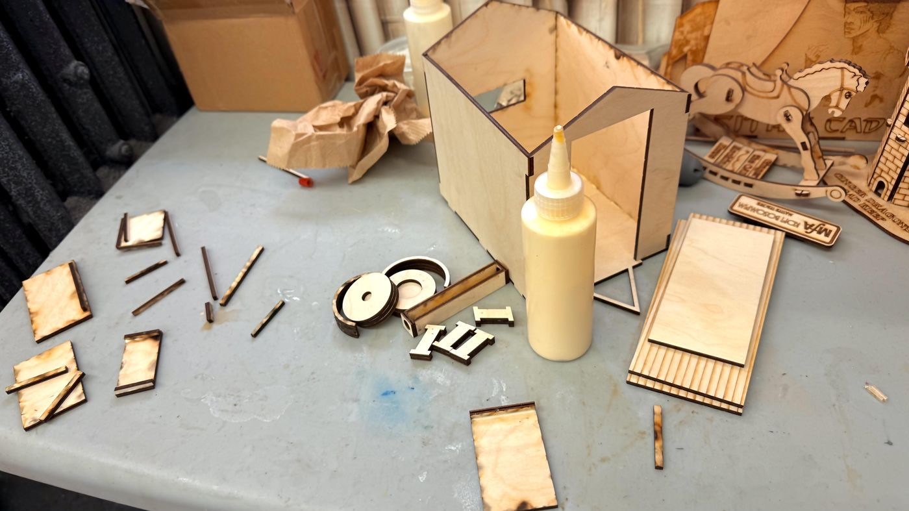
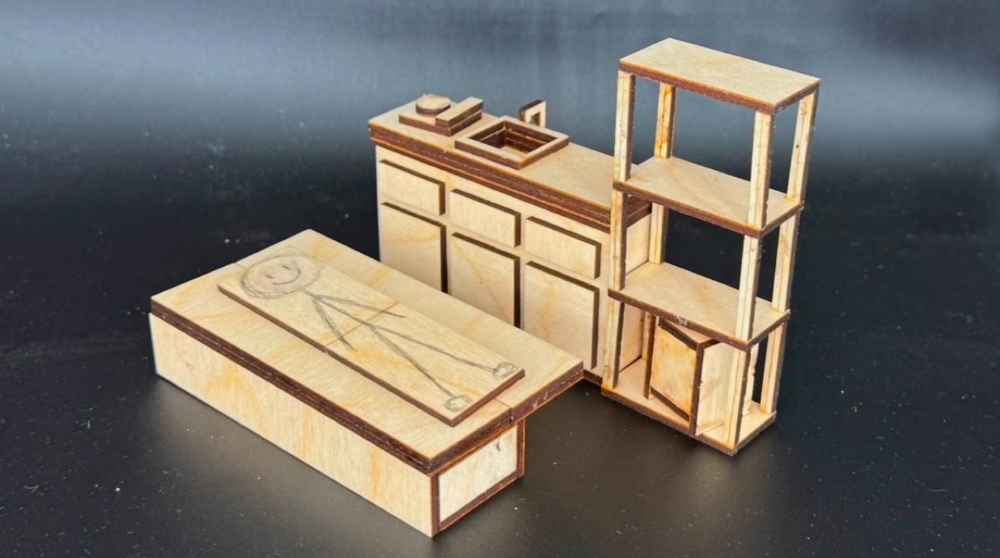
What I learned
The biggest lesson from this project was the importance of planning before modeling. My first attempts failed largely because I hadn’t thought through the dimensions and constraints.
I also got experience with Revit, laser cutting, and combining different fabrication methods.
There are still many things a full-scale shelter would need, including further structural, regulatory, utility, and safety engineering. But working through those constraints helped me understand how much more there is to engineering than creating a model that looks good.
Make It Small
The project won the Judges’ Prize for Best Designed 2D & 3D Model in Autodesk Instructables’ 2025 “Make It Small” contest and was featured on the Instructables front page, where it has been viewed about 12,000 times.